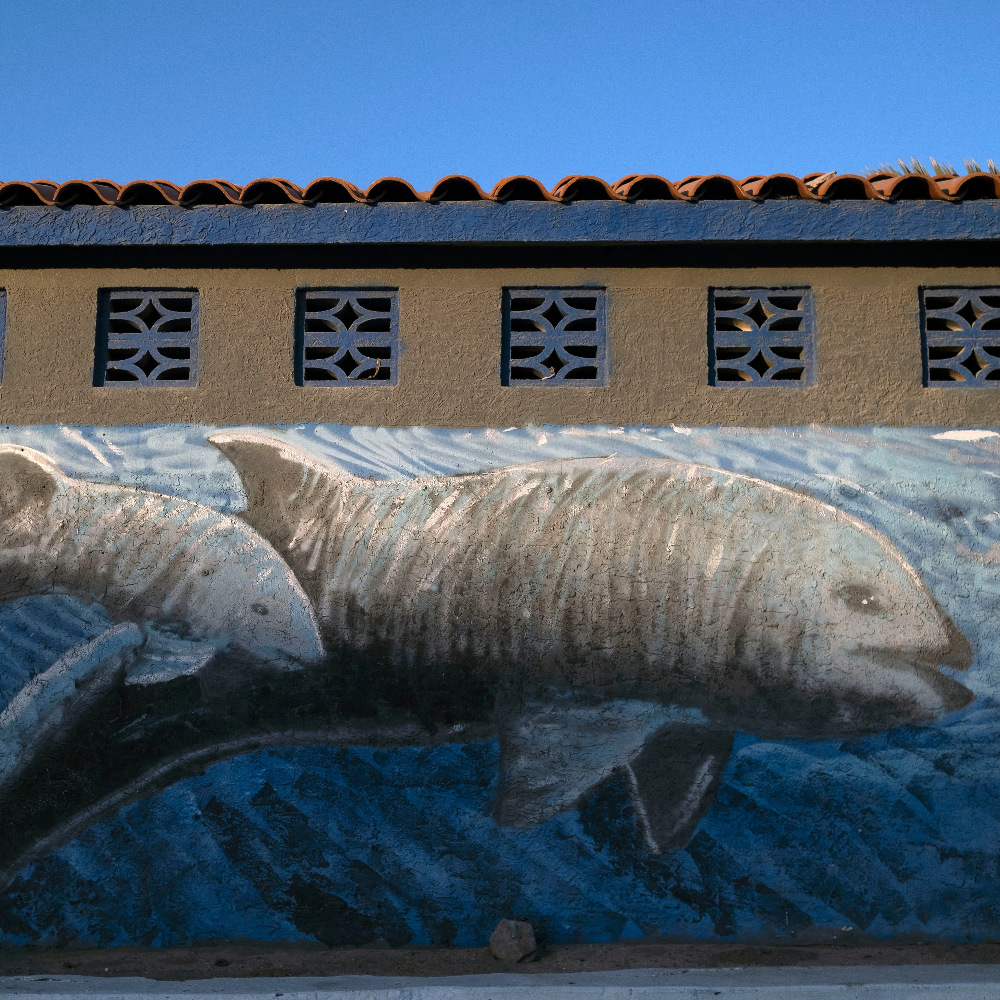

SCIENCE
New method delivers life-saving drugs to the brain-using sound waves...
Read

HISTORY MAGAZINE
The victorious origins of Cinco de Mayo
Read

SCIENCE
Fruits and vegetables are less nutritious than they used to be
Read
TODAY'S PICKS

ANIMALS
Vaquita propoises may still recover if illegal fishing ends

MAGAZINE PLANET POSSIBLE
4 eco-friendly ways to keep pest out of your yard
MAGAZINE
MAGAZINE
How this feline became the biggest comback in cat conservation

HISTORY MAGAZINE
This American Supreme Court fight defined U.S. citizenship
TRAVEL WORLD HERITAGE
To see Saudi Arabia, start with this 'magical' gateway to Mecca
ENVIROMENT
Forest as 'carbon offsets'? Climate change has other plans